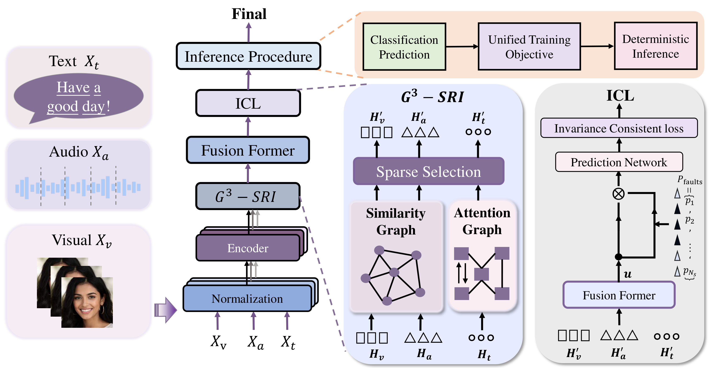

Yufan Zhou (Vann)
Communication Engineering Student
School of Informatics,
Xiamen University
Email: vannvann@stu.xmu.edu.cn
Location: Xiamen, Fujian, China
Links:
[GitHub]
[Repositories]
[X]
[ORCID]
[Google Scholar]
🙋 About Me
Vann is currently a 2023 undergraduate student majoring in Communication Engineering at the School of Informatics, Xiamen University (XMU). Throughout my undergraduate studies, I was under the academic supervision of Prof. Deqing Wang, to whom I extend my sincere gratitude for his invaluable advice and assistance. I am currently conducting remote research on Video Gen under the supervision of Prof. Yujun Cai at the University of Queensland (UQ). My current research interests include Video Gen, VLM, Agent System, and Efficient-AI.
My ongoing research centers on investigating object coherence and physical plausibility within generated videos. As an early-stage researcher, I remain in the learning stage, working diligently to solidify domain knowledge and explore cutting-edge research frontiers.
I am actively seeking Fall 2027 PhD opportunities and research collaborations — please feel free to reach out!!!
🔥 News
Apr. 2026: 😊 My first paper was accepted at ICMR(1st Author, CCFB)!
Mar. 2026: 🎉🎉 Our Chinese invention patent "一种多模态融合采算通一体水声有线双模通信系统及方法" has been granted (3rd Inventor).
Feb. 2026: 🎉🎉 Our computer software copyright "面向海底地震仪应用的地声信号采集模块软件V1.0" has been granted (1st Author).
Sept. 2025: 🎉🎉 Awarded the National Scholarship again.
Sept. 2024: 🎉🎉 Awarded the National Scholarship.
📝 Selected Papers
*: equal contribution, †: corresponding author

GS3-ICL: Graph-Structured Sparse Selection with Invariance-Consistent Learning for Multimodal SER
Yufan Zhou, Zhiyuan Ma, Lei Wang, Hongrui Ren, Zhuolun Zhong, Shangpeng Wang†, Chenyuan Zhang†, Haoran Yang†
- We propose GS3-ICL, a graph-guided framework that integrates structured representation induction, sparse token selection, and invariance-consistent learning for Multimodal Speech Emotion Recognition.
👨🎓 Educations
-
Sept. 2023 - Present, B.Eng. Student in Communication Engineering, Xiamen University (XMU)
💻 Research Intern
-
Jul. 2026 - present, remote Research Intern, University of Queensland, supervised by Prof. Yujun Cai
-
Jul. 2024 - Sept. 2026, FUNLab, Xiamen University, supervised by Prof. Deqing Wang
🏆 Competitions & Patents
-
Feb. 2026: Computer Software Copyright "面向海底地震仪应用的地声信号采集模块软件V1.0" (1st Author, No. 2026SR0292628). [PDF]
-
Sept. 2025: Second Prize, Fujian Provincial Division, National College Student Mathematical Contest in Modeling. [PDF]
-
Aug. 2025: Third Prize, National Finals, 8th (2025) National College Student Embedded Chip and System Design Competition (Chip Application Track). [PDF]
-
Apr. 2025: Third Prize, Fujian Provincial Division, 12th "Datang Cup" National College Student New Generation Information and Communication Technology Competition (ICT Fundamental Communication Track). [PDF]
🏅 Achievements
National Scholarship of China (2023-2024, 2024-2025)
Merit Student of Xiamen University (2023-2024, 2024-2025)
Misc
Photography • Films: Jia Zhangke (favorite: Mountains May Depart) • Literature: Sanmao & Li Juan (favorite: Winter Pasture 🐂)
Hiking • Exploration: Whiskey 🥃 & Coffee ☕